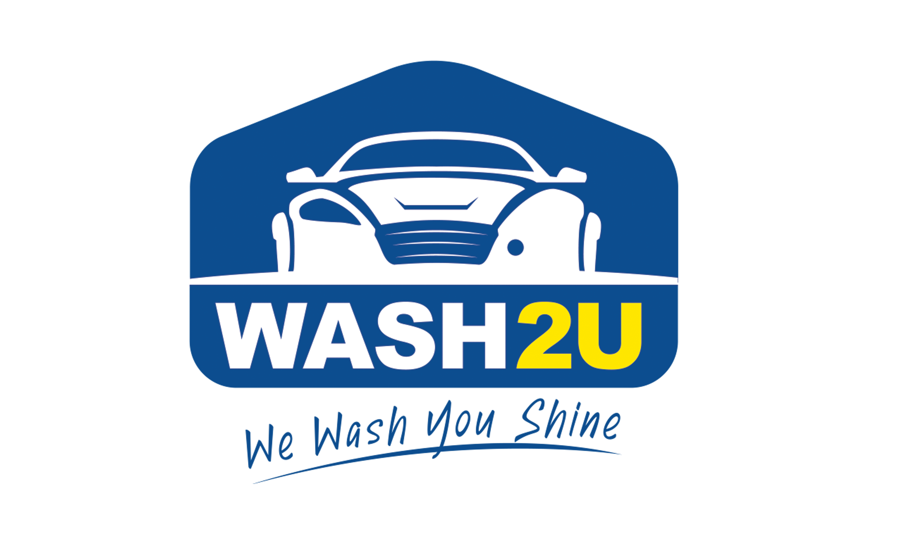

Expert tips, guides and news from Wash2U Malaysia
Discover top-rated car wash services near Lotus’s Selayang. We review prices, quality, and customer feedback to help you choose.
Read ArticlePractical tips for locating premium car wash centers in Selangor & KL. Learn what to look for in ratings, services, and convenience.
Read Article